En radioapparat - sändare - kommer, oavsett hur tekniskt avancerad och "high-end" den än är, aldrig kunna prestera på sin högsta nivå om den inte paras med en effektiv antenn. En väl anpassad antenn är en grundförutsättning för all radiokommunikation. Dunning–Kruger sponsrar detta inlägg.
INLEDNING
Heinrich Hertz skapade antennen 1888 och kunde då bevisa den elektromagnetiska strålningens existens.
Signalen från en sändare färdas genom en transmissionskanal, dvs. antennkabeln, ex. koaxialkabeln. Signalen kan vi i det fallet kalla för en guidad våg och är elektrisk energi; en växelström som svänger i takt med sändarens frekvens.
I antennen omvandlas den elektriska energin till elektromagnetisk strålning som då kan färdas genom fria rymden, alltså luften.
Mottagande antenn tar sedan emot den elektromagnetiska strålningen, omvandlar den till elektrisk energi och matar den via transmissionsledningen till mottagaren.
Principiellt kan allting vara en antenn, så länge materialet är konduktivt, dvs. elektriskt ledande. Ett gem skulle exempelvis kunna användas för att sända och ta emot signaler.
Nu är ju ett (metalliskt) gem rätt litet och har inte så många användningsområden annat än för mindre system. För sändningar som behöver färdas längre avstånd, exempelvis till rymdfarkoster tiotals miljarder kilometer bort från jorden, krävs betydligt mer avancerade system.
Hela området däremellan ställer olika krav på antennernas utförande, men några generella principer är applicerbara oavsett systemstorlek och användningsområde.
GRUNDLÄGGANDE PRINCIPER
RESONANS
I en resonant antenn studsar vågorna av ström och spänning fram och tillbaka mellan antennändarna och skapar stående vågor längs elementen. Monopol- och dipolantennen är exempel på detta och denna typ av antenn kan även kallas stående våg-antenn
Motsatsen kallas resande-vågsantenn och där går energin som genererar den elektromagnetiska strålningen - radiovågorna - genom antennen i en (1) riktning. Exempel på antenner är här den rombiska antennen, den axiala helixantennen och trådantennen.
Eftersom resande-vågsantennen är icke-resonant har den fördelen av att vara mer bandbredig än en resonant antenn, dvs. den kan hantera sändning inom ett störra frekvensområde.
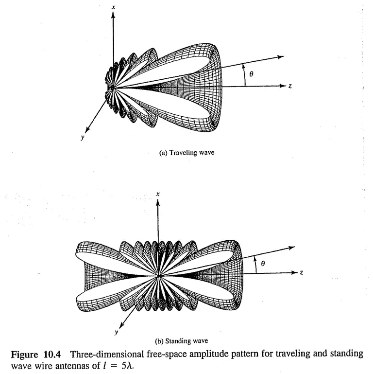
Jämförelse mellan strålningsmönstret på en stående-våg och resande-våg från en trådantenn. Källa.
ℹ️ EN ANTENN SOM ÄR BRA PÅ ATT SÄNDA ÄR ÄVEN BRA PÅ ATT TA EMOT.
STRÅLNINGSMÖNSTER
En antenn kan antingen vara rundstrålande (eng. omnidirectional) eller riktstrålande (eng. directional).
Energin som en antenn utstrålar kan representeras av dess strålningsmönster, vilket är diagrammatiska representationer över hur den elektromagnetiska strålningen distribueras ut i fria rymden.
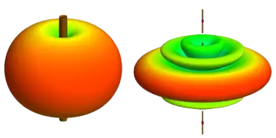
Low-gain vs. high-gain antenn. Notera den tillplattade formen på high-gain-antennen; mer effekt i smalare riktning.
RUNDSTRÅLANDE - LOW-GAIN ANTENNA (LGA)
Denna antenn strålar lika i alla horisontella riktningar runt antennen, enl. vänstra bilden.
Strålningen är symmetrisk i dess azimutala riktningar, men ju närmre Z-axeln vi kommer, desto mindre strålar antennen. Detta kallas för null - noll - och antennen kommer inte att ta emot signaler som kommer från null-riktning.
RIKTVERKAN - HIGH-GAIN ANTENNA (HGA)
För att uppnå riktverkan med en rundstrålande antenn behöver man justera antennens gain så den utstrålar större effekt i specifika riktningar.
Detta ger ökad prestanda jämfört med rundstrålande antenner samt mindre benägen att ta upp störningar från oönskade källor.
RIKTSTRÅLANDE
Den observante kanske lägger märke till att båda dessa exempel tycks stråla 360⁰ - alltså vara rundstrålande. Det stämmer.
För att uppnå riktverkan med en dedikerad riktantenn behöver själva antennen och dess element ordnas på ett sådan sätt att dess strålning färdas primärt i önskad riktning.
ANTENNLÄNGD
Frekvens och våglängd är omvänt relaterade, dvs. hög frekvens = kort våglängd och vice versa. För att den transversella elektromagnetiska vågen (TEM-våg) som färdas i koaxialkabeln ska kunna lämna antennen (effektivt) behöver antennen vara av en längd som överensstämmer med vågens längd - våglängden.
Det behöver inte var en hel våglängd, utan kan vara ex. en halv- eller kvartsvågslängd; λ, ½ λ, ¼ λ. Monteras antennelementen likt en discone-, yagi- eller log-periodisk antenn kan vi få bredbandiga antenner; alltså antenner som är effektiva över ett stort frekvensområde.
λ = c/f
-
λ - Våglängd
-
c - Ljusets hastighet (~300,000 kilometer/sekund)
-
f - Frekvens, mätt i MHz
Omvänt relaterade
-
Hög frekvens - kort våglängd
-
Låg frekvens - lång våglängd
-
Kort våglängd - hög energi
-
Lång våglängd - låg energi
Direkt relaterade
Frekvens och energi är direkt relaterade.
-
Hög frekvens - hög energi
-
Låg frekvens - låg energi
UTRÄKNING
Med ovanstående formel kan vi räkna ut längden för en resonant, effektiv antenn som är en våglängd lång; λ. En s.k. helvågsantenn. Förutsatt att vi utformar antennen efter en specifik frekvens.
Längden på en antenn som ska sända på 868 MHz kan vi alltså få fram genom
300 / 868 = 0,35 (meter)
868 MHz har alltså en våglängd på 35 cm och vår helvågsantenn ska då vara 35 cm.
FÖRKORTNINGSFAKTOR
Antennsystemets kompontenter, ledningsförmågan i materialet och omgivningens påverkan på signalen är saker som påverkar vågens hastighet - våghastigheten.
Diagram för den så kallade förkortningsfaktorn finns att läsa i antennhandböcker, men för enkelhetens skull kan vi räkna med att förlusten är 5%.
300 / 868 * 0.95 = 0,33
33 cm lång ska vår antenn då vara. Eller 16,5 cm om vi väljer ½ λ-utförande.
ELEKTRISK LÄNGD
En monopolantenn matad från ena änden är resonant om den elektriska längden är lika med en kvartsvåg (¼ λ), på frekvensen den används.
Är den kortare än så kommer den dras med kapacitiv reaktans, vilket vi inte går djupare in på än att säga att detta skapar reflektioner vilket kommer skapa problem för sändare och/eller mottagare.
ELEKTRISK FÖRLÄNGNING
För att undgå detta byggs sådana antenner med en spole närmast basen - en induktor - och detta kan man ibland se på bl.a. fordon med mobiltelefonantenner, där antennen ser ut att vara skruvad i nederkant.
Tillskottet av denna spole (eng. coil) till en elektriskt kort antenn kommer göra den till resonant, vilket ibland kallas att elektriskt förlänga antennen.
ELEKTRISK FÖRKORTNING
Omvänt kommer en monopolantenn LÄNGRE än ¼ λ inkludera kapacitiv reaktans. En kondensator (eng. capacitor) i serie med antennen kan lösa detta problem och detta kan då kallas att elektriskt förkorta antennen.
FREKVENSOMRÅDE
Tillverkning av antenner sker antingen
-
Specifikt efter den frekvens de ska sända på, alltså att längden på antennen överensstämmer med λm; Hel-, halv- eller kvarstvågantenner; λ, λ/2, λ/4.
-
Bredbandigt, dvs. att de sänder och tar emot på ett större antal frekvensband. Här hittar vi bl.a. discone-antenner och logperiodiska antenner.
En normal, vanlig antenn är passiv. Motsatsen till detta är en aktiv antenn som förstärker mottagna signaler med ett visst antal decibel. Aktiva antenner är normalt förekommande för DVB-T - marksänd digital-TV - hemma i fönstret och kopplas in i eluttaget.
POLARISERING
Den elektromagnetiska strålningen har dels ett elektriskt fält och dels ett magnetiskt fält. Dessa fält är vinkelrätt orienterade mot varandra och beroende på hur fälten är riktade får vi olika polarisering.
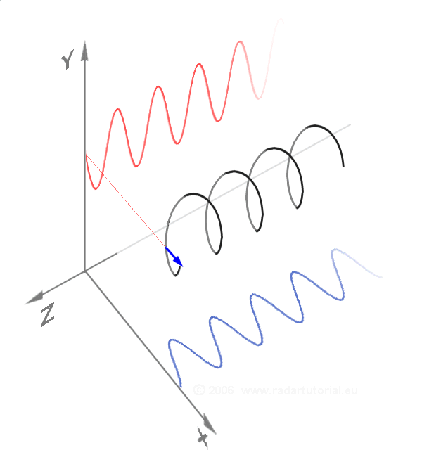
En i riktning Z högercirkulärt polariserad våg är här summan av två linjärt polariserade komponenter. Y-axeln horisontell, X-axeln vertikal.
LINJÄR POLARISERING
Linjär polarisering delas in i två typer:
-
Vertikal polarisering - vertikalt elektriskt fält
-
Horisontell polarisering - horisontellt elektriskt fält
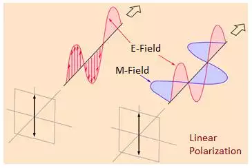
Linjär vertikal polarisering, vilket kan ses på det vertikala ELEKTRISKA fältet.
Så länge radiovågorna inte reflekterats mot något under själva överföringen kommer polariseringen inte spontant att ändras, val av polarisering är alltså av mindre vikt än att sändar- och mottagarantenn har samma polarisering.
Dämpningen (signalförlusten) där exempelvis sändarantenn är horisontellt polariserad (liggande) och mottagarantenn vertikalt polariserad (stående) kan vara mer än 30 dB.
Värt att tillägga är att när man sänder på kortvåg (HF) studsar (reflekteras) radiovågorna ofta i jonosfären, något som kan ändra polariseringen. Detta är svårt att förutse varpå det kan vara bra att kunna växla mellan olika polariserade mottagarantenner.
CIRKULÄR POLARISERING
Vid cirkulär polarisering vrider sig det polariserade planet som en skruv runt riktningsaxeln.
Cirkulär polarisering kan vara högercirkulär eller vänstercirkulär.
För radiovågor är det främst linjär polarisering som används, med undantag för rymdkommunikation eller i fall där signalen måste ta sig igenom svår terräng, då cirkulär polarisering kan användas; tänk korkskruv som penetrerar terrängen.
Ett annat exempel är videotransmission mellan kontrollenhet och FPV-drönare; den typen av flygning kännetecknas av en hög grad ackrobatik där sändare och mottagare ofta och snabbt befinner sig olika mellan det horisontella och vertikala planet, varför den cirkulära polariseringen är att föredra då signalerna alltid “hamnar rätt” nånstans längs antennen.
VIKTEN AV RÄTT POLARISERING
För bästa möjliga överföring vid cirkulär polarisering gäller att både sändar- och mottagarantenn har samma vridningsriktning.
Vilken polarisering en utsignal från en radiosändare får beror på val av antenn och hur den monteras; liggande eller stående.
Genom att varva olika polariseringar kan man nyttja frekvensspektret mer effektivt och placera sändare närmre varandra i frekvens utan att de stör varandra.
Viktigt är att montera både sändar- och mottagarantennen på samma sätt, annars kan man få en utsläckning av signalen. Jämför förlusterna vi får när en antenn vinklas eller böjs i en båge över ett fordon - DETTA SPELAR ROLL.
ANTENNTYPER
Det finns många olika varianter av antenner. Vilken antenn som ska användas för en specifik applikation beror på många faktorer, exempelvis frekvens, användningsområde och placering etc.
Fordonsmonterade antenner ämnade att ta emot FM-signaler är designade för omnidirektionalitet (rundstrålande) då den förväntas ta emot signaler från alla olika håll. En radiolänk däremot har som syfte att ta emot och skicka signaler i en specifik riktning, dessa kan kallas för riktantenner eller riktade antenner.
Sändande och mottagande antenn behöver nödvändigtvis inte vara av samma typ, men för att undvika signalförluster kan det vara att föredra för vissa applikationer. Något som kan vara viktigt att tänka på dock, är att antennerna bör vara lika polariserade, dvs., om en sändare sänder ut sin elektromagnetiska strålning horisontellt polariserad skall mottagande antenn också vara horisontellt polariserad - antennen ska alltså ligga ner för att uppnå horisontell polarisering.
ANTENNUPPSÄTTNING
Flera antenner (element) anslutna till en enda mottagare eller sändare kallas antennuppsättning - eller antenna array.
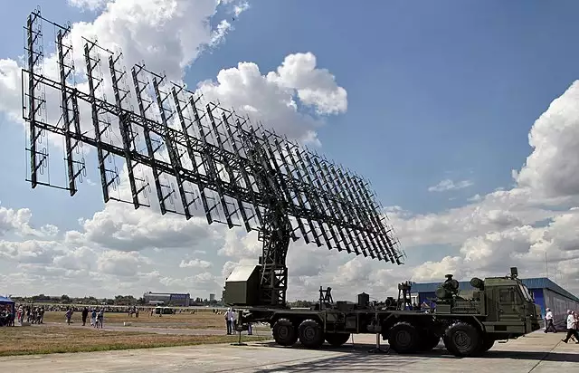
Nebo-M phased array mobil luftförsvarsradar. Består av 175 vikta dipolantenner. Vitaly V. Kuzmin.
En antennuppsättning kan uppnå högre gain (riktverkan) än ett ensamt element. Dessa typer ses vanligtvis i radaranläggningar i form av phased array-antenner; varje antennelement har sin egen förstärkare och genom att fasförskjuta signalerna kan radarstrålen riktas utan att själva antennen rör sig, vilket är ett mycket snabbare sätt än att fysiskt flytta antennen.
Tekniken utvecklades för radar men har genom åren fått utökade användningsområden såsom TV-sändningar, rymdkommunikation, väderforskning och kommersiella system likt 5G och WiFi; vissa typer av WiFi-routrar erbjuder Multiple-Input Multiple-Output (MIMO) och beam forming-teknik som är en av 4 normalt förekommande typer av antennuppsättningar:
-
Hybrid Beam Forming (HBF)
Beam Forming riktar signalen till användande enheter och kan maximera och effektivisera länken.
Yagiantennen och den log-periodiska antennen är också en form av array.
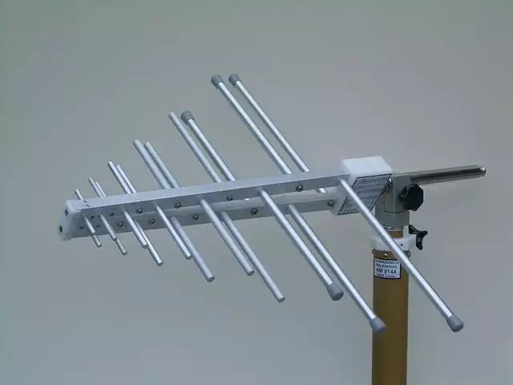
En log-periodisk antenn med frekvensområde 205 - 2400 MHz.
Den liknar yagi-udan, men är ej en yagiantenn.
EXEMPEL
-
MONOPOLANTENN -
rundstrålande- En antenn bestående av ett spröt eller rörformad konstruktion, oftast monterat vinkelrätt mot en konduktiv yta kallad jordplan. Antennen kan även gå under benämningen 1/4-vågsantenn, jordplansantenn eller GPA (Ground Plane Antenna). En halv dipol beter sig som en full dipol då dess reflektion i markplanet bildar den saknade delen. Markplanet kan vara naturligt, såsom land/hav, eller artificiellt som ett biltak. Kan också vara speciellt designad med horisontella eller nedåtlutande spröt i en kvartvågslängd (λ/4).Wiki -
DIPOLANTENN -
rundstrålande- En antenn formad som ett stående eller liggande T, där foten är koaxialkabeln och taket är två spröt (två kvartvågselement), vars totala längd motsvarar en halv vågländ eller en jämn multipel av λ/2. En 1/2-vågsantenn är en komplett elektrisk krets medan en 1/4-vågsantenn inte är det. En komplett krets behöver inget jordplan, således är dipolantenner jordplanlösa. En antenn bestående av två korslagda dipolantenner kallas vändkorsantenn. Wiki -
YAGIANTENN -
riktad- Den klassiska TV-antennen alla är bekanta med. Består av en reflektor längst bak, därefter en dipol samt ett antal direktorer som sitter framför dipolen i riktning mot sändaren (vid mottagning) eller mottagaren (vid sändning). Wiki -
LOG-PERIODISK ANTENN -
riktad- Denna antenns specifika syfte är att ha stor bandbredd. Dess praktiska bandbredd styrs av storleken på dess största komponenter (för låga frekvenser) och hur små de minsta elementen är (för de höga frekvenserna). Den liknar Yagiantenn och kan ses som att man kopplat ihop flera Yagi till en. Wiki -
BIKONISK ANTENN -
riktad- En modifierad typ av dipol där de två spröten ersatts av flera spröt, i en konisk form. Detta ger större bandbredd jmf. med vanlig dipol. Typiskt frekvensområde är 20 - 300 MHz men kan designas att användas upp till 18 GHz. Wiki -
HORNANTENN -
riktad- Populär antenn för UHF-bandet (300 MHz - 3 GHz) och högre. Har ofta ett riktat strålningsmönster. Eftersom dessa antenner inte har några resonanta element kan de verka över ett brett frekvensområde (ex. mellan 1 GHz - 20 GHz). En ackustisk hornantenn kallar vi för megafon. Hornantenner kommer i många olika utföranden; koniska, trattformade, E-plan, H-plan, exponentiella etc. Wiki -
PARABOLANTENN -
riktad- Parabolen är ingen antenn i sig, utan en reflektor som matar en - vanligtvis - hornantenn. Används främst till satellitmottagning och fasta radiolänkar, eller som spaningsradarantenner. Parabolen som sänder data till Voyager 1 och 2 har en diameter på ~70 m och en maximal effekt av 400kW. Wiki -
AXIAL HELIXANTENN - Eller spiralformad antenn. Denna antenn producerar en cirkulär polarisering. Används för att spåra mobiler, missiler samt för rymdkommunikation. Sändaren eller mottagarens orientering är mindre relevant då polariseringsförlusten är begränsad vid cirkulär polarisering. Endast från VHF och uppåt. Wiki
TEORI
Många böcker är skrivna om antennteori, som är ett ämne där Dunning-Kruger ständigt gör sig påmind. Man behöver dock inte vara fysiker för att dra nytta av några koncept. Texten nedan är att ses som en grov förenkling och vill man verkligen förstå detta på djupet får man dedikera tid till att lära sig detta; läsa böcker och nyttja sökmotorer.
DECIBEL
Decibel förknippas vanligtvis med ljud och ljudintensitet, men i radions värld visar det bl.a. signalstyrkan i kablar eller en antenns gain.
Decibel [dB] är ett logaritmiskt mått och används för att ange ett förhållande till ett referensvärde. 0 dB innebär att värdet motsvarar referensnivån, därefter kan en effektförändringstabell visa den logaritmiska ökningen.
| Ökning i [dB] | X högre än referensnivå |
|---|---|
| 0 dB | Motsvarar referensnivån |
| 3 dB | X2 |
| 10 dB | X10 |
| 20 dB | X100 |
| 30 dB | X1000 |
Omvänt gäller lika;
-3 dB är halva referensnivån.
-10 dB är 1/10 av referensnivån.
GAIN
Antennvinsten, dess gain, kan beskrivas som ökningen - förstärkningen - av en signals effekt, ofta uttryckt i decibel - [dB].
Antennvinsten fås fram genom att jämföra mot en referensantenn som normalt antingen är en s.k. isotropisk antenn eller halvvågsdipol.
En isotropisk antenn är en teoretisk antenn som utstrålar lika kraft i alla tre dimensioner och ska inte förväxlas med en vanlig rundstrålande antenn, som bekant utstrålar i dess horisontella riktning (varierande effekt med höjdvinkeln) och minskar till noll i antennens förlängning.
Värt att notera är att en antenn, till skillnad från en förstärkare - amplifier - inte har en kraftkälla som tillåter antennen skapa extra effekt för att förstärka signalen; en antenn är jämförbar med en reflektiv lins här, i att den tar tillgänglig energi från källan och fokuserar den över ett brett eller smalt område.
dBi - ANTENNFÖRSTÄRKNING
Decibel i förhållande till en isotropisk strålningskälla. [dBi] berättar hur mycket en antenn förstärker den inmatade signalen i förhållande till en referensantenn som i detta fall är den teoretiska isotropiska antennen.
Ju högre [dBi] desto kraftigare förstärkning. Ett högre [dBi] betyder också en mer framskjuten gain. Mer framskjuten gain betyder högre signalstyrka, men i en smalare riktning, dvs. inte lika rundstrålande.
Jämför med en ficklampa där du kan justera ljuskäglan;
- Låg gain - bred ljuskägla
- Hög gain - fokuserad ljusstråle
⚠️ UPPEHÅLL DIG INTE I ONÖDAN NÄRA EN AKTIV ANTENN.
UPPEHÅLL DIG ALDRIG I RIKTANTENNENS SÄNDNINGSRIKTNING
Den isotropa antennen har 0 dBi, det är referensnivån. En antenn som har 0 dBi sägs ha “ingen gain”, men kom ihåg att detta bara är en teoretisk antenn.
I avsnittet om strålningsmönster såg vi hur strålningen från en antenn bredde ut sig. Den isotropa antennens strålningsmönster är en helt rund sfär, dvs. lika mycket energi i alla riktningar. Det betyder, att om våran riktiga antenn har en gain på 2.1 dBi så kan den fokusera den energin - 2.1 dB mer signalstyrka - någonstans på antennens sfäriska strålningsmönster jämfört med den isotropiska strålningskällans starkaste punkt.
ℹ️ LÄGRE GAIN I BERGIG TERRÄNG KOMMER GE BÄTTRE TÄCKNING.
HÖGRE GAIN ÖVER PLAN TERRÄNG KOMMER GE BÄTTRE TÄCKNING.
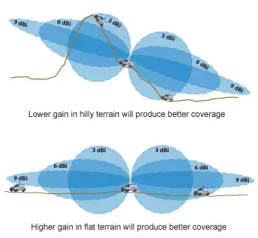
Hög och låg gain i terräng.
dBd - ANTENNFÖRSTÄRKNING
Använder man sig istället av en dipol som referensantenn, som ju faktiskt är en riktig antenn, används istället [dBd].
En referensdipol är satt att ha en gain på 2.15 dBi, så för att konvertera mellan [dBi] och [dBd] adderar eller subtraherar man enligt
- [dBi] = [dBd] + 2.15
- [dBd] = [dBi] - 2.15
Att specificera sin antenn i [dBd] betyder att antennen ifråga kan fokusera sin energi X dB mer än en dipol i någon riktning.
ELEKTRISK SIGNALSTYRKA
Elektrisk signalstyrka mäts antingen i [dBd] eller [mW] och förhållandet mellan de två skrivs som
1 mW = 0 dBm
Detta är normalt förknippat med uteffekten från en radiosändare och dess relation till 1 mW.
3 dBm motsvarar som bekant en dubblering av uteffekten (30 dBm motsvarar därmed 1 W, 33 dBm 2 W).
En handhållen kommunikationsradio med en maximal uteffekt om 5 W ligger på 37 dBm och en FM-radiosändare med en uteffekt på 100 kW och en sändningsräckvidd på ungefär 50 km ligger på 80 dBm. Solens totala uteffekt ligger på 3.846×10^26 W, eller 296 dBm.
| Effekt [W] | Effekt [dBm] |
|---|---|
| 0,01 W | 10 dBm |
| 0,1 W | 20 dBm |
| 1 W | 30 dBm |
| 10 W | 40 dBm |
| 100 W | 50 dBm |
Observera värden anges här i watt, **INTE** milliwatt |
EFFEKTIV UTSTRÅLAD EFFEKT
Om man vet [dB] eller [W] på sin utrustning kan man räkna ut den utstrålade effekten från antennen (Effecive Radiated Power - ERP). Den effektiva utstrålade effekten är den effekt sändarantennen utstrålar i sin bästa sändningsriktning.
Ett enkelt exempel med en sändare på 1 W.
| Radiosändare 1 W | 30 dB |
| Antenn | 6 dBi gain |
| Antennkabel | 3 dBi dämpning |
30 + 6 - 3 = 33 [dBm]
33 dBm är 3 dB mer än 30 dBm, alltså dubbelt så mycket. Den utstrålade effekten från 1 W radiosändaren är alltså 2 W i dess bästa sändningsriktning.
SAMMANFATTNING
[dBi] och [dBd] är alltså hur mycket gain - antennvinst - en antenn tillför en signal relativt en referensantenn, i en specifik riktning, medan [dBm] är mängden relativ effekt som sänds ut av en sändare - alltså kraft.
En antenn som utstrålar lika mycket energi i alla riktningar sägs ha “ingen gain”; det är 0 dBi. Kom ihåg att den isotropiska antennen bara är en teoretisk antenn som används som referens. 0 dBi är inte fysiskt möjligt.
ℹ️ GAIN FÖRSTÄRKER INTE SIGNALEN TOTALT SETT, UTAN TAR STYRKAN FRÅN EN STRÅLNINGSRIKTNING OCH KONCENTRERAR DEN TILL EN ANNAN STRÅLNINGSRIKTNING.
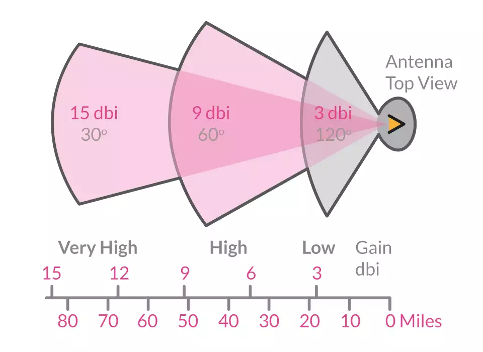
Jämförelse mellan olika gain i dBi
Èj att ses som exakta värden
MOTTAGARKÄNSLIGHET
Vi har hittills fokuserat på signaltransmission från sändarens perspektiv, men [dBi] och [dBm] gäller även hos signalmottagaren och, när man talar om känsligheten hos en mottagare, specifikt [dBm].
För mottagning av signal gäller negativ [-dBm] - ju lägre desto bättre, eftersom vi vill att vår mottagare ska kunna fånga upp så svaga signaler som möjligt. Alltså, -40 dBm är bättre än -90 dBm.
Känsligheten hos olika mottagare varierar och olika standarder har olika krav på känsliget, normalt mellan -50 till -100 dBm.
0 dBm skulle innebära 100% känslighet, vilket är en omöjlighet.
| Bluetooth | -70 dBm till -100 dBm |
| WiFi | -40 dBm till -80 dBm |
| Mobiltelefoni | upp till -120 dBm |
| GNSS | -140 toill -165 dBm |
Olika generella systemkrav |
Dessa värden är direkt kopplade till exempelvis hur du visas signalstyrkan på ditt lokala trådlösa nätverk - Received Signal Strength Indicator - RSSI.
Några generella riktlinjer för hur du kan läsa signalstyrkan, med nyanser beroende på aktuell utrustning och omgivning, vilket kan vara relevant för att avgöra bästa placering av din elektroniska utrustning:
- Lägre än -30 dBm: för bra för att vara sant, eller signalmättning (inte bra).
- -30 dBm: bästa möjliga signal.
- -50 dBm: utmärkt signal.
- -60 dBm: väldigt bra signals.
- -65 dBm: bra, stabil signal. Hittills har du haft fulla staplar.
- -70 dBm: gränsen för när du tappat en pinne, på väg att tappa en till om det inte redan skett. Fortfarande stabil uppkopling.
- -75 dBm: börjar bli problematiskt, men kanske fortfarande användbar.
- -80 dBm: gränsar till värdelöst - en (1) stapel kvar.
- -90 dBm: svag signal, (nästan) omöjlig att koppla upp sig emot routern.
- Högre än -90 dBm: glöm det.
ℹ️ NOTERA ATT DET ÄR SIGNALSTYRKAN I [dBm] DU SKA MÄTA OCH JÄMFÖRA, INTE ANTALET STAPLAR VILKET ÄR VÄLDIGT GODTYCKLIGT MELLAN TILLVERKARE OCH MODELLER.
NOTERA OCKSÅ ATT UPPDATERINGSFREKVENSEN FÖR SIGNALSTYRKAN INTE ALLTID SKER I REALTID, UTAN KAN VARA SLÄPANDE UPP TILL 1 MINUT
WIFI
En WiFi-router har typiskt en uteffekt av 0,1 W på 2,45 GHz-bandet och 0,2 W på 5 GHz-bandet.
0,1 W är 20 dBm och 0,2 är dubbelt så mycket, alltså en ökning av 3 dB vilket ger att 5 GHz-bandet sänder med en uteffekt av 23 dBm.
Förlusten för en WiFi-signal (kanal 9; 2.452 GHz) som färdas i fria rymden 100 m är ~80 dB. På det avståndet är alltså signalstyrkan – när den når mottagaren - -60 dBm. Passerar signalen fasta objekt såsom väggar, glasrutor etc., är det en helt annan sak, dvs. högre förluster.
Detta tydliggör vikten av en mottagare - en bra antenn - med hög känslighet. Kom ihåg, decibel är en logaritmisk skala, så skillnaden mellan en mottagare som har en känslighet på -100 dBm och en med -106 dBm är stor.
ℹ️ NOTERA ATT HÖGSTA TILLÅTNA UTEFFEKT VARIERAR MELLAN LÄNDER SAMT WIFI-STANDARD
LÄNKBUDGET
Länkbudget är summan av alla vinster och förluster en signal utsätts för; från sändaren via transmissionsmediumet (fria rymden, kablage etc.) till mottagaren.
Det är en ekvation som ger mottagen signalstyrka i [dBm] efter att den utstrålade signalen försvagats genom vågutbredning, dämpning i koaxialkablar och andra förluster, samt förstärkning genom antennvinst (gain), förstärkare i mottagaren och eventuella repetrar signalen passerat genom.
Det är ett verktyg som hjälper till att säkerställa att ett system kan fungera tillräckligt effektivt, med tillräcklig hörbarhet och dataöverföringssäkerhet och en godtagbar SNR (Signal-to-Noise-Ratio)
En enkel länkbudgetekvation är:
Signalstyrka [dBm] = sändareffekt [dBm] + vinster [dB] – förluster [dB]
ℹ️ DET SÄNDAREFFEKTEN ÖVERSTIGER MOTTAGARENS KÄNSLIGHET KALLAS LÄNKMARGINAL.
DÄMPNING
Kablar, filter, kopplingar och vågutbredning innebär signaldämpning. Det innebär att man tappar energi i förhållande till den tillförda energin och detta uttrycks vanligen i decibel - [dB].
SNR
Förhållandet mellan signaleffekt och den bruseffekt som påverkar signalen negativt. Detta förkortas SNR eller S/N, vilket kommer från engelskans Signal-to-Noise Ratio.
För en mottagare är detta förhållandet mellan den önskade signalen och nivån på bakgrundsbruset som mottagaren genererar.
Detta är ett sätt att mäta känsligheten i en mottagare där ju lägre SNR desto bättre då mottagande station inte genererar så mycket brus. En ratio högre än 1:1 (0 dB) indikerar mer signal än brus.
Anges ofta även i [dB] och räknas då signal minus brus. Är signalnivån 45 dB och bruset 22 dB är alltså SNR 22 dB.
IMPEDANS
Elektrisk anpassning mellan sändare och antenn är viktigt för att få ett så pass effektivt sändarsystem som möjligt. Ett dåligt anpassat system kommer göra att en del av effekten, istället för att strålas ut från antennen omvandlas till värme som, beroende på VAR den alstras kan orsaka skador på sändaren.
Moderna sändare kan ha inbyggt skydd för detta, som begränsar sändareffekten när missanpassningen blir för stor.
I början av artikeln klargjorde vi att en bra (effektiv) sändarantenn även är en bra mottagarantenn. Skillnaden är att en dåligt anpassad mottagarantenn INTE kommer skada mottagaren, utan bara göra att man hör sämre.
Antenn och matningskabel måste vara impedansanpassade till varandra för att det inte ska uppstå vågreflektion i anslutningen och följaktligen värmealstring.
Impedansmatchning sker antingen för en specifik frekvens eller bredbandigt. Då det generellt sett inte är möjligt att matcha för ett brett frekvensspektra ställer det olika krav.
För en specifik frekvens är det enklare; korrekt antennlängd, korrekt koaxialkabel och ett enklare filter. En bredbandig matchning kräver multisektionella filter.
STÅENDEVÅG & SWR
I ett radiosystem har alla transmissionsledningar, sändare och antenner en impedans. 50 ohm är ett vanligt impedansvärde i ett radiosystem och för att säkerställa max effektöverföring från källan - sändaren - genom koaxialkabeln och ut genom antennen måste komponenternas impedans matcha.
Om impedansen inte matchar, vilket den inte alltid gör, så kommer inte all effekt levereras ut genom antennen. Eftersom energi inte kan förstöras (termodynamikens andra huvudsats) måste den ta vägen nånstans; den kommer då börja vandra tillbaka längs ledningen, mot sändaren, med samma amplitud och frekvens som utgående signal - resandevågen.
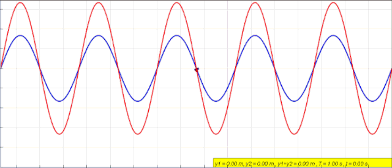
Ståendevåg (röd) skapad av överlagringen
av en våg som färdas vänster (blå) och en våg som färdas höger (grön). Källa
När det händer kommer den elektriska spänningen och laddningen hos resandevågen och den reflekterade vågen ta ut varandra på olika punkter längs ledningen vilket resulterar i ståendevågor och effektförluster.
För att veta om ens system uppnått en god impedansmatchning har vi något som kallas SWR - Standing Wave Ratio eller stående-vågförhållande - SVF.
Stående-vågförhållande (SVF) är förhållandet mellan avgiven och reflekterad elektromagnetisk energi i ett antennsystem.
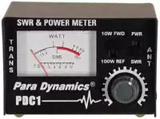
En SWR-mätare
- SWR 1.0 - 1.4: Idealiskt.
- SWR 1.5 - 1.9: Utrymme för förbättring.
- SWR 2.0 - 2.4: Inte bra, men kommer troligtvis inte skada utrustningen.
- SWR 2.5 - 2.9: Noterbara effektförluster med risk att utrustning skadas. Undvik att använda radion.
- SWR 3.0: Allvarliga effektförluster med nästintill garanterad skada på utrustning. Använd inte radion.
⚠️ SWR <1 INDIKERAR ATT MÄTAREN, ANTENNEN ELLER RADION ÄR DEFEKT.
ℹ️ NOTERA ATT DET ENDAST ÄR SÄNDNING SOM KAN SKADA UTRUSTNINGEN NÄR SWR-VÄRDET ÄR HÖGT. ATT TA EMOT SIGNALER ÄR OFARLIGT.
KRINGUTRUSTNING
En antenn är mer eller mindre obrukbar om den inte på något sätt kopplas till en sändare/mottagare.
För ändamålet finns ett flertal olika kontakter och kablar som erbjuder olika egenskaper och lämpar sig för olika applikationer.
Kravet på interna komponenter och kretsar i radiosystemen har ökat under 2000-talet till följd av ökade dataöverföringshastigheter och bandbredd, kablage och kontakter är inget undantag.
ANTENNKONTAKTER
Kontaktens primära uppgift är att se till att signalen som färdas från koaxialkabeln till antennen kan göra det till en så exakt impedansmatchning som möjligt, med minimala förluster och med kabelns skärmning bibehållen.
Det finns många olika typer beroende på applikation och användningsområde; väderskydd, storlekskrav etc.
Kontakterna kopplas samman bl.a. genom skruv-/bajonettfattning eller pressas ihop enligt hane-hona. Vilken typ av fastlåsning som ska användas bestäms bl.a. av hur ofta kopplingen bedöms komma att kopplas, alltså sammankopplingscykler samt hur mycket kraft man kommer att behöva använda; handkraft, verktyg.
En vanlig SMA-kontakt bedöms exempelvis klara upp till 500 sammankopplingscykler innan man börjar se böjda eller saknade fingrar i honkontaktens mittuttag.
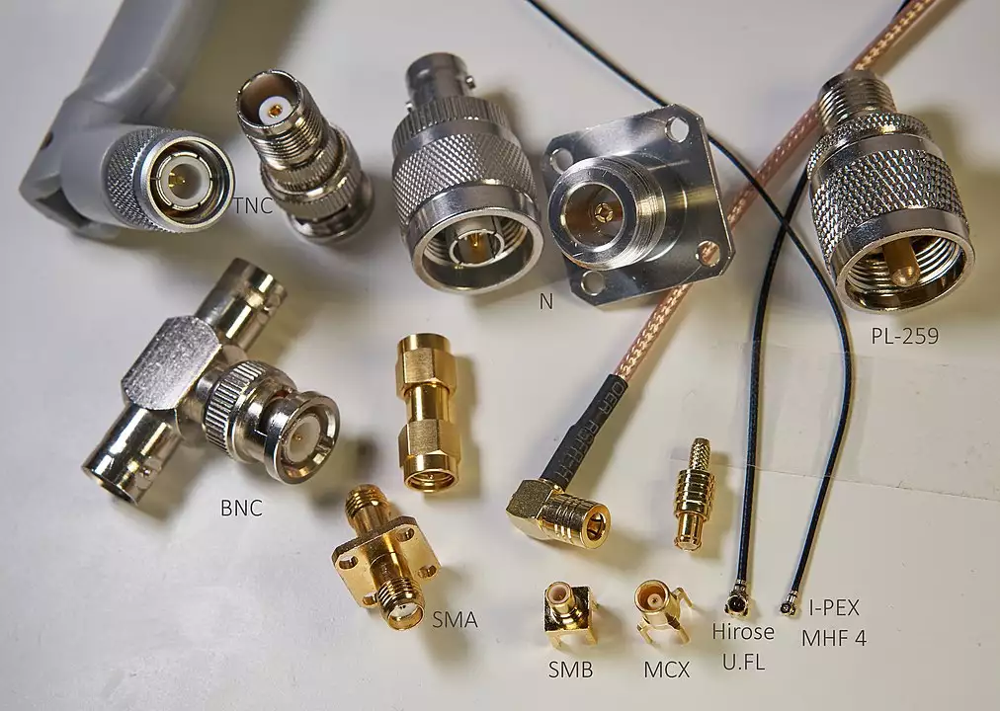
En samling populära antennkontakter. CC BY-SA 4.0
ANTENNKABEL
Antennkabeln, eller koaxialkabeln, är den typ av kabel som används för att överföra radiofrekventa radiosignaler.
Dess uppbyggnad ger med sig att kabeln får en god skärmning vilket innebär att signalen stannar kvar i kabeln och inte stör eller störs ut av annan elektronik. Låga förluster helt enkelt.
Hur bra skärmning en kabel har är direkt avhängt kvaliteten; materialval, diameter och pris.
Det finns bl.a. platta kablar, styva och mer följsamma. Supertunna och de med vinklade kontakter samt s.k. lågförlustkablar. Ett par frekvent förekommande koaxkablar är de som kallas RG58 och RG59. De har en impedans på 50 respektive 75 ohm.
Koaxialkabeln är uppbyggd av ett yttre plasthölje (A), en skärm (B), en isolator (C) och en mittledare (D).
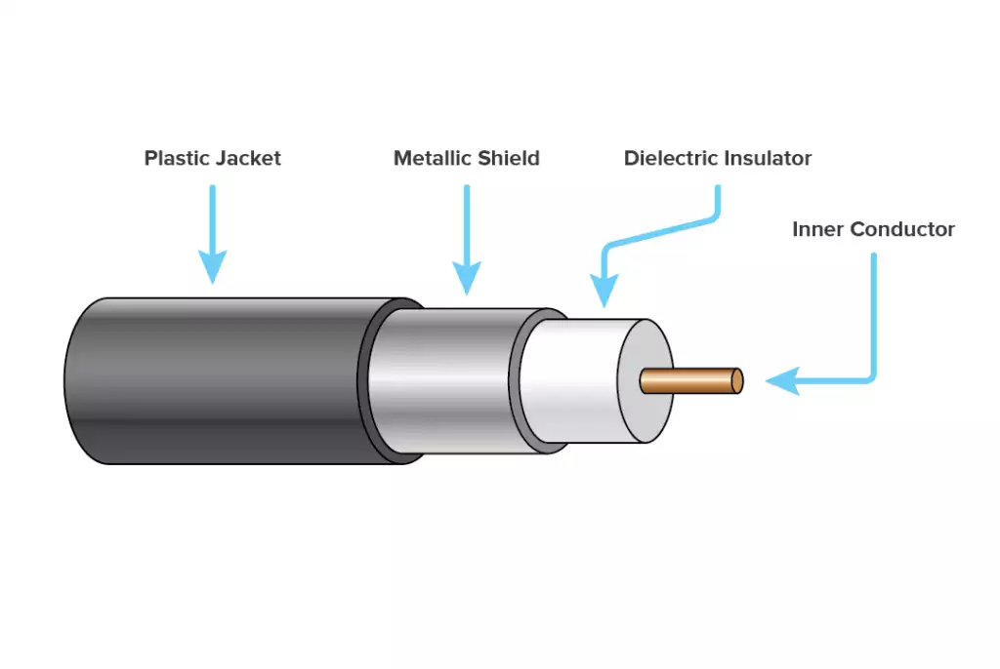
En koaxialkabel i genomskärning
Yttre plasthölje (A), skärm (B), isolator (C), mittledare (D)
-
MITTLEDAREN
Vanligtvis koppar eller tennbelagd koppar.
-
ISOLATORN
Även kallat dialektrikum. Beroende på kvalitet kan plast eller (det dyrare och bättre) teflon användas. Luft eller skum förekommer även det som dialektrikum.
-
SKÄRMEN
Ett elektriskt ledande hölje som, återigen beroende på kvalitet kan se lite olika ut även om principen är densamma; ett finmaskigt nät av tunna metalltrådar. De dyrare varianterna har flera lager av det finmaskiga nätet plus folie. Dessa kallas ibland dubbelskärmade. De billigaste kablarna är de vi normalt kallar TV-kabel.
-
YTTRE PLASTHÖLJE
Skyddar kabeln.
Kabeln i sig är en 2-polig elektrisk elkabel där signalerna överförs mellan den elektriska ledaren och skärmen som elektromagnetiska fält genom det dialektriska materialet - isolatorn. Det elektromagnetiska fältet som färdas i kabeln är en s.k. transversell elektromagnetisk våg (TEM-våg).
Ju längre kabel desto mer dämpning utsätts signalen för, vilket ställer kvar på högre uteffekt och bättre - känsligare - mottagare.
Dämpningen ökar med ökad frekvens, varpå kravet på bra kablage är högre vid höga frekvenser än vid låga.
ELEKTROMAGNETISKA FÄLT
Alla antenner kommer när de sänder att generera ett elektromagnetiskt fält (EMF) - det är hela grunden i all radiokommunikation. Strålningen från en radiosändare kallas icke-joniserande strålning.
ICKE-JONISERANDE STRÅLNING
Förutom radio- och mikrovågor är även optisk strålning såsom IR, synligt ljus och UV också icke-joniserande. Då denna typ av strålning normalt inte är lika energirik som joniserande strålning är den primära effekten vid absorbtion i kroppen endast en temperaturhöjning.

Varningsskylt för icke-joniserande strålning
JONISERANDE STRÅLNING
Joniserande strålning har högre energi än icke-joniserande, med frekvenser och våglängder i området exa-/petahertz och piko-/nanometer. Dessa benämns bl.a. UV-, X- och Y-strålning, alltså röntgenstrålning och strålning från radioaktiva källor.
Den joniserande strålningen kan, om energin är tillräckligt hög tränga in i kroppen och påverka dess cellstruktur och DNA.

Varningsskylt för joniserande strålning
SÄKERHET
Forskning inom detta område är alltjämt fortgående och nya rön träder emellanåt fram. Generellt när det gäller radiokommunikation är riskerna inte överhängande (vad vi nu vet, vid godkända nivåer), men försiktighetsåtgärder skall tas vid sändning på vissa frekvenser och vid vissa effektnivåer.
Strålskyddsmyndigheten ger ut allmänna råd för begränsning av allmänhetens exponering, vars syfte är att skydda från akuta skadliga biologiska effekter vid EMF-exponering. Skador från elektriska eller magnetiska fält som kan ge upphov till skadlig värmeutveckling eller störningar i nersystemets funktion.
Fält med frekvens upp till ~10 MHz kan om strömtätheten blir hög i kroppen påverka det centrala nervsystemet och höga nivåer mellan 100 kHz - 10 GHz kan leda till uppvärmning av kroppen.
Riktningen på det elektromagnetiska fältet samt dess våglängd kan skapa resonansfenomen i kroppen, då våra kroppar fungerar som en antenn. Avgörande för vilka vilken frekvens som skapar denna resonans är storleken på våra kroppar; En vuxen persons resonansfrekvens ligger mellan 70 - 90 MHz. Våra olika kroppsdelar kan även de ha olika resonanta, där en vuxen persons huvud är resonant vid ~400 MHz.
Medelvärdet över hela kroppen, dvs. hur mycket energi vi absorberar per tidsenhet och massenhet benämns SAR - Specific Absorption Rate - och mäts i enheten [W/kg].
Några generella rekommendationer kan göras med hänsyn till hur vi hanterar våra antenner och kommunikationsutrustning.
-
Montera antennerna så långt bort som möjligt från människor eller djur. Helst inte inomhus då detta kan ge väldigt höga koncentrationer av EMF, utöver den försämrade effekten. Om en antenn ändå monteras inomhus används uteslutande låga effekter.
-
Riktantenner kan generera hög fältstyrka i deras huvudriktningar. Sådana antenner får inte riktas på sådant sätt att människor kan exponeras.
-
Gå aldrig under trådantenner.
-
Använd TILLRÄCKLIG effekt.
-
Strömmar kan färdas utanpå matarledningen, tillbaka från antennen. Dessa strömmar kan generera en hög fältstyrka. Se därför till att placera matarledningar så långt bort som möjligt från platser där människor befinner sig.
-
Vid osäkerhet; uppehåll dig inte i närheten av antenner och matarledningar.
Strålskyddsmyndigheten, Arbetsmiljöverket och Folkhälsomyndigheten har mer information.
SAMMANFATTNING
För ockulärlänk, dvs. LOS (Line-Of-Sight) kan man dra följande generella slutsatser när det kommer till antenner överlag:
-
Sändarantenner är varken helt isotropiska (uniformt 3D-strålande) eller omnidirektionella (uniformt 2D-strålande), någon form av föredragen strålriktning - gain - förekommer.
-
Användning av omnidirektionella (rundstrålande) antenner för telekommunikation är ovanligt, istället har antennen typiskt förstärkt signal i någon riktning (gain).
-
Mottagarantenner är också typiskt av typen riktantenner och kommer, när de är rätt inställda, samla in mer effekt (ha en högre känslighet) än vad en rundstrålande antenn skulle ha. Mottagande antenns gain adderar till mottagen signal.
-
En effektiv sändarantenn är även en effektiv mottagarantenn.